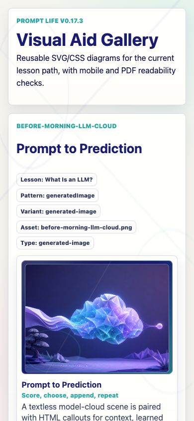
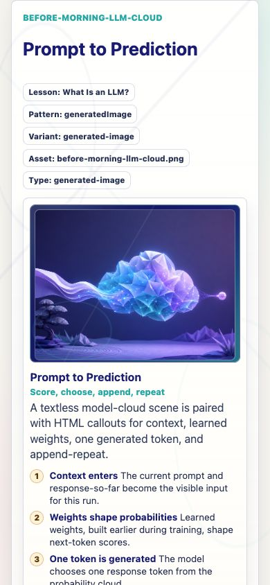
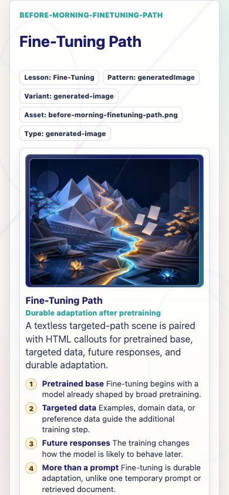
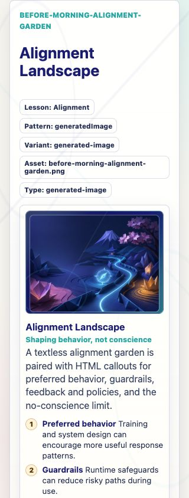
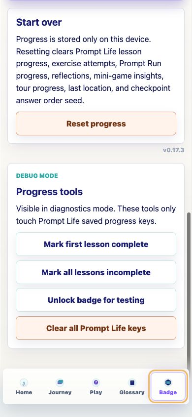

Prompt Life v0.17.3
Generated Asset Integration Report
Date: June 5, 2026
This report wraps the implementation summary and screenshots for the Before Morning generated-asset integration pass.
What Changed
- Bumped the visible app version to
v0.17.3. - Added
src/data/visualAssets.tsas a registry for the four provided textless Before Morning PNG assets. - Integrated the provided assets into
What Is an LLM?,Pretraining,Fine-Tuning, andAlignment. - Kept instructional labels, captions, callouts, accessible descriptions, and review metadata in HTML/app code.
- Updated the visual-aid review gallery with generated-asset filename, path, type, alt text, and text-handling metadata.
- Preserved Journey order, progress rules, checkpoint randomization, games, and the single badge model.
Files Changed
src/data/visualAssets.tssrc/components/VisualAids.tsxsrc/data/content.tssrc/main.tsxsrc/styles/global.csspublic/assets/generated/before-morning/four provided PNG assetsdocs/REVIEW_NOTES.mddocs/stage-audits/v0-17-before-morning/README.mddocs/stage-audits/v0-17-before-morning/card-inventory.mddocs/stage-audits/v0-17-before-morning/recommendations.mddocs/stage-audits/v0-17-before-morning/IMAGE_ASSET_PLAN.mddocs/stage-audits/v0-17-before-morning/screenshot-index.mddocs/stage-audits/v0-17-before-morning/GENERATED_ASSET_INTEGRATION_V0_17_3.mddocs/stage-audits/v0-17-before-morning/screenshots/v0.17.3 screenshots
Assets Integrated
| Asset | Lesson | Visual Aid ID |
|---|---|---|
before-morning-llm-cloud.png |
What Is an LLM? | before-morning-llm-cloud |
before-morning-pretraining-landscape.png |
Pretraining | before-morning-pretraining-landscape |
before-morning-finetuning-path.png |
Fine-Tuning | before-morning-finetuning-path |
before-morning-alignment-garden.png |
Alignment | before-morning-alignment-garden |
Visual Aid Behavior
The four generated-image visual aids render the provided PNG inside a stable 4:3 frame, then use app-rendered titles, captions, callouts, and key takeaways below the image. The visual-aid review gallery lists asset metadata and keeps the text-handling rule explicit.
Where LLMs Fit remains ai-family-tree, a coded SVG/HTML visual aid. No generated PNG was added for that topology card.
Accessibility Handling
- Each generated image has dedicated
alttext in the asset registry. - Each visual aid has an accessible description and HTML callouts.
- The review gallery exposes filename, path, visual type, alt text, and text-handling notes.
- The image frame includes a visible fallback note if an asset fails to load.
- No instructional text is baked into the PNG files.
Verification
npm run typechecknpm run buildnpm run build:pagesnpm run audit:answersBrowser QA passed for generated visual aids at 390px, Alignment at 320px, visual-aid gallery metadata, Learn mode, Preview mode, Review mode, Badge version, and console errors. Browser console errors observed: none.
The build still reports the existing Vite large-chunk warning.
Known Issues
- The existing Vite large-chunk warning remains.
- The generated PNGs are 4:3 assets; the app intentionally preserves that ratio for stable mobile and PDF layout.
Next Three Recommended Steps
- Add a lightweight visual regression script for the four generated visual-aid IDs at 320px and 390px.
- User-test whether learners understand that image-backed visuals are conceptual scenes and that formal teaching text lives in HTML.
- Clean stale old visual-aid IDs from historical v0.6 docs only if those docs are meant to stay current rather than archival.
Run Locally
npm installnpm run dev -- --host 0.0.0.0- Open
http://localhost:5173/on this computer or the Vite network URL on a phone on the same Wi-Fi.






v0.17.3 right-aligned under Start over.